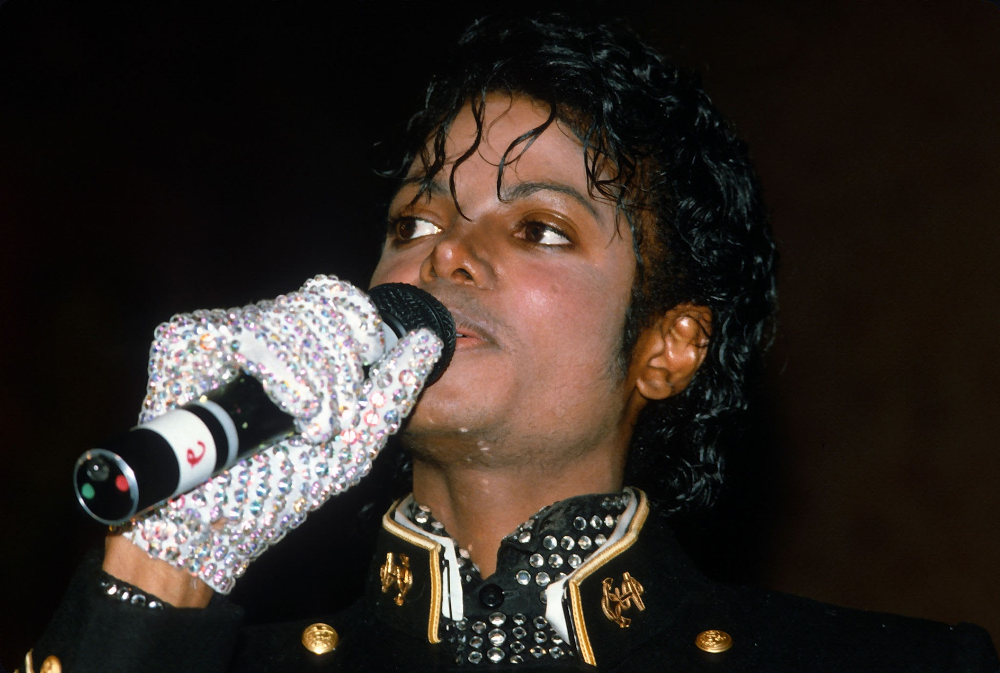

"The greatest education in the world is watching the masters at work."

Biography
Michael Joseph Jackson, born August 29, 1958, in Gary, Indiana, was an American singer, songwriter, and dancer. Known as the "King of Pop," Michael Jackson is one of the most significant cultural figures in the world, renowned for his groundbreaking music, electrifying performances, and revolutionary contributions to music videos and pop culture.
Jackson's career began at a young age as a member of the Jackson 5, but he achieved worldwide fame as a solo artist with the release of albums like *Thriller*, *Bad*, and *Dangerous*. His influence spans genres and generations, with hit songs such as "Billie Jean," "Beat It," and "Smooth Criminal" that have left an indelible mark on the music industry.